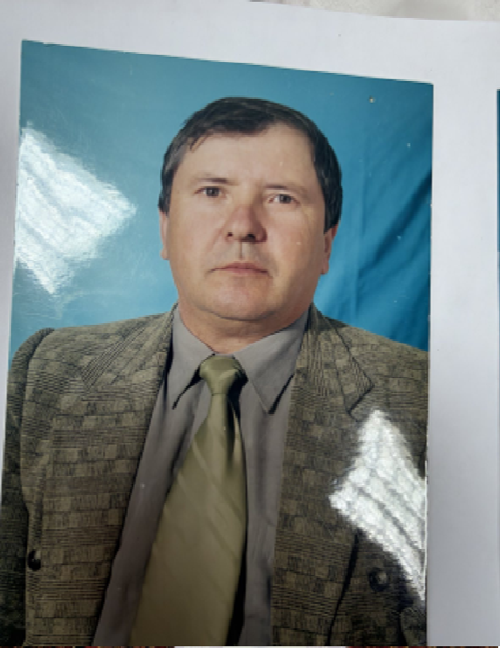
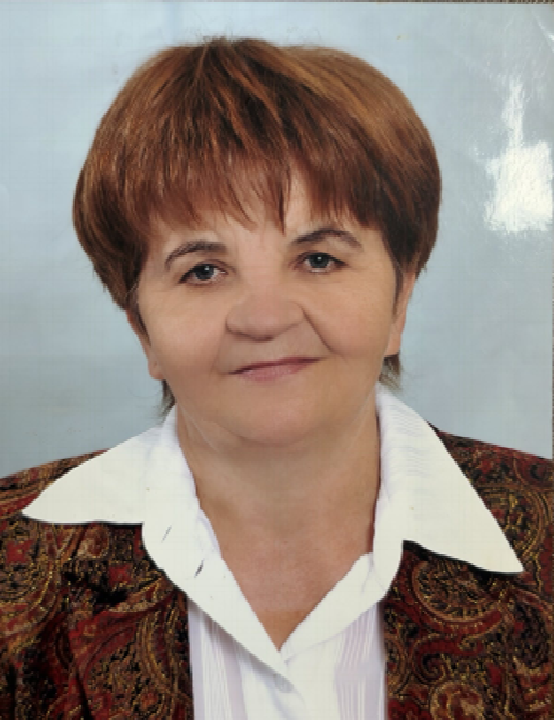
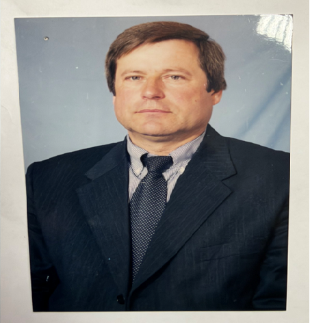
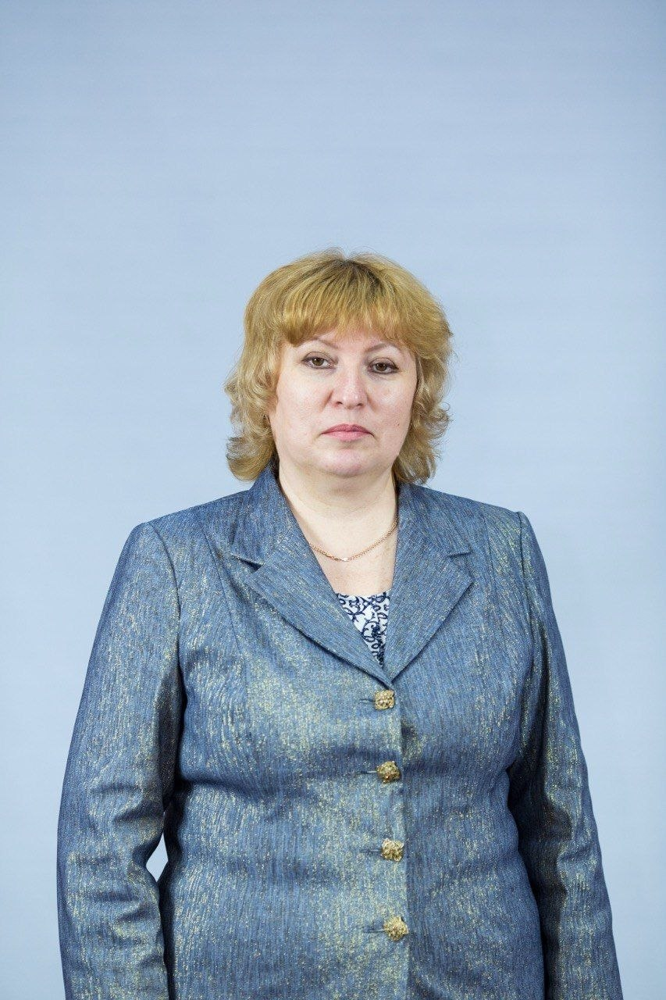

CATEDRA SOCIOUMANĂ
Educație pentru viață – între cunoaștere, valori și formarea personalității
În cadrul liceului, Catedra socioumană reprezintă un colectiv didactic important, care contribuie activ la formarea unei generații responsabile, educate, creative și implicate în viața comunității. Din componența acesteia fac parte profesorii de geografie, istorie, educație fizică și educație tehnologică. Aceste discipline, deși au domenii de studiu distincte, se completează reciproc prin cunoștințele, competențele și valorile pe care le dezvoltă în rândul elevilor.
Activitatea catedrei se bazează pe colaborare, profesionalism, creativitate și dorința continuă de a îmbunătăți procesul educațional. Profesorii urmăresc nu doar transmiterea cunoștințelor, ci și dezvoltarea unor personalități armonioase, capabile să gândească critic, să ia decizii responsabile, să respecte valorile naționale și universale și să participe activ la viața societății.
Scopul activității catedrei
Scopul principal al Catedrei socioumane constă în asigurarea unui proces educațional de calitate, prin dezvoltarea competențelor cognitive, sociale, civice, fizice și practice ale elevilor, contribuind la formarea unei personalități autonome, echilibrate și responsabile, pregătite să facă față provocărilor societății contemporane.
Obiectivele catedrei
Pentru realizarea acestui scop, activitatea colectivului didactic este orientată spre următoarele obiective:
- Dezvoltarea gândirii critice, a spiritului de observație și a capacității de analiză și interpretare a informațiilor.
- Formarea conștiinței istorice și geografice, precum și a respectului față de patrimoniul național, valorile culturale și identitatea poporului.
- Cultivarea spiritului civic, a responsabilității sociale, a toleranței și a respectului față de diversitatea culturală.
- Promovarea unui mod de viață sănătos, a activității fizice, a disciplinei și a spiritului de echipă.
- Dezvoltarea creativității, a îndemânării, a gândirii practice și a capacității de a realiza produse și proiecte utile.
- Integrarea metodelor interactive și a tehnologiilor informaționale în procesul de predare–învățare–evaluare.
- Stimularea participării elevilor la concursuri, olimpiade, competiții sportive, activități extracurriculare și proiecte educaționale.
- Consolidarea parteneriatului dintre școală, familie și comunitate.
Direcții de activitate și contribuția disciplinelor
Fiecare disciplină contribuie prin specificul său la realizarea obiectivelor comune ale catedrei, oferind elevilor perspective complementare asupra lumii și asupra propriei dezvoltări.
Istoria îi ajută pe elevi să înțeleagă trecutul, să valorifice lecțiile istoriei și să conștientizeze importanța identității naționale, a libertății, a demnității și a valorilor democratice. Acest lucru este posibil datorită profesionalismului și dedicației profesorilor de istorie: Verebcean Viorica, Blidaru Tatiana și Lazarev Elena.
Geografia dezvoltă capacitatea de înțelegere a mediului înconjurător și a fenomenelor naturale și sociale, cultivând responsabilitatea față de natură și implicarea în protejarea mediului, avându-l pe carismaticul profesor de geografie – Grițcan Andrei.
Educația fizică promovează sănătatea, disciplina, perseverența, fair-play-ul și spiritul de echipă, contribuind la dezvoltarea armonioasă a elevilor. Acest spirit fiind altoit de către bravii noștri profesori de educația fizică,Bulbuc Valeriu și Cioban Petru.
Educația tehnologică stimulează creativitatea, inițiativa, gândirea practică și capacitatea de a transforma ideile în produse și activități concrete, dezvoltând competențe utile pentru viață. Educația plastică fiind predată în cel mai frumos fel, de tânăra, creativa și ingenioasa profesoară Ana Muntean.
Activități și modalități de realizare
În vederea atingerii obiectivelor propuse, membrii catedrei organizează și desfășoară o gamă variată de activități didactice și extracurriculare: lecții interactive, excursii tematice, vizite de studiu, mese rotunde, dezbateri, expoziții, concursuri, competiții sportive, activități ecologice și proiecte interdisciplinare.
Un rol important îl ocupă activitățile comune, care demonstrează că educația nu se limitează la discipline separate, ci reprezintă un proces complex, în care cunoștințele, deprinderile și valorile se completează reciproc. Prin colaborare, profesorii creează contexte de învățare în care elevii pot cerceta, experimenta, comunica și aplica în situații concrete ceea ce învață.
De asemenea, cadrele didactice acordă atenție dezvoltării profesionale continue, schimbului de bune practici, utilizării resurselor digitale și diversificării strategiilor de predare, adaptând demersul educațional la nevoile și particularitățile elevilor.
Omagiu dascălilor care au scris istoria catedrei
O catedră își construiește identitatea nu doar prin activitatea celor care îi sunt astăzi membri, ci și prin moștenirea celor care au făcut parte din ea de-a lungul anilor. Nu putem vorbi despre realizările și evoluția instituției fără a ne aminti cu respect și recunoștință de profesorii care și-au consacrat viața educației, contribuind prin profesionalism, dăruire și responsabilitate la formarea multor generații de elevi.
Unii dintre ei se bucură astăzi de liniștea anilor de pensie, purtând cu demnitate amintirea unei cariere dedicate școlii, iar alții au plecat dintre noi, lăsând în urmă un gol, dar și o moștenire de neprețuit. Numele, munca și valorile promovate de acești dascăli rămân parte a istoriei instituției noastre. Le păstrăm vie amintirea și le aducem un sincer omagiu, convinși că un profesor adevărat continuă să trăiască prin fiecare elev pe care l-a format, prin fiecare valoare pe care a cultivat-o și prin fiecare generație pe care a inspirat-o.
Este vorba de regretatul Eni Vasile, profesor de istorie, care a fost de la început, contribuind astfel la consolidarea instituției.

Cei care sunt la odihna bine meritată, dar au avut un role norm în activitatea acestei instituții au fost profesoarele de geografie Ciobanu Ecaterina și Bragari Nina.

La fel, o contribuție majoră la educarea tinerilor generații au avut-o profesorii de educația fizică Spinei P. și Mancoș Vladimir.

Rezultate și perspective
Prin activitatea desfășurată, Catedra socioumană contribuie la crearea unui mediu educațional dinamic, în care elevii sunt încurajați să descopere, să cerceteze, să creeze, să coopereze și să își valorifice potențialul. Reușitele elevilor, implicarea lor în activități și proiecte, precum și dezvoltarea competențelor necesare vieții reprezintă repere importante ale muncii colectivului didactic.
Perspectivele de dezvoltare vizează consolidarea colaborării interdisciplinare, extinderea proiectelor educaționale, promovarea educației pentru sănătate și mediu, valorificarea patrimoniului cultural și istoric, precum și dezvoltarea competențelor necesare integrării active în societatea contemporană.
Serviciul psihologic – un sprijin pentru echilibrul, dezvoltarea și reușita fiecărui elev
35 de ani de educație, formare și grijă față de oameni

De-a lungul celor 35 de ani de activitate, liceul a devenit nu doar un spațiu al învățării și al formării intelectuale, ci și un mediu în care generații de elevi au crescut, s-au descoperit pe sine, și- au format personalitatea și au învățat să privească cu încredere spre viitor. În acest parcurs educațional, serviciul psihologic din liceu și-a asumat un rol important, fiind aproape de elevi, cadre didactice și părinți, oferind sprijin, înțelegere și îndrumare în momentele în care acestea au fost necesare.
Pornind de la convingerea că fiecare copil este unic, cu propriile aspirații, emoții, aptitudini, nevoi și particularități de dezvoltare. misiunea psihologului școlar nu s-a limitat la identificarea dificultăților, ci a urmărit, în primul rând, valorificarea potențialului individual, prevenirea problemelor emoționale și comportamentale și crearea unui climat educațional bazat pe siguranță, respect și încredere.
Prin activitățile de evaluare și cunoaștere psihologică, consiliere individuală și de grup, ore tematice, traininguri și activități de prevenție, elevii au fost încurajați să se cunoască mai bine, să-și înțeleagă emoțiile, să-și dezvolte stima de sine, să comunice asertiv și să găsească soluții constructive în situațiile dificile. Un accent deosebit se acordă în permanență prevenirii bullyingului și a violenței, gestionării conflictelor, dezvoltării inteligenței emoționale, formării relațiilor sănătoase și adoptării unui stil de viață echilibrat.
Adolescenții, aflați într-o perioadă complexă de transformări și căutări, în care nevoia de acceptare, apartenență, autonomie și afirmare devine deosebit de importantă, prin vizitele lor la cabinetul psihologic, găsesc un spațiu al dialogului deschis, în care elevul este ascultat fără a fi judecat, înțeles fără a fi etichetat și sprijinit în identificarea propriilor resurse și soluții.
Serviciul psihologic a devenit, în același timp, un partener al cadrelor didactice și al părinților. Prin consultanță, activități de informare și consiliere, s-a urmărit consolidarea colaborării dintre familie și școală, identificarea timpurie a dificultăților cu care se confruntă copiii și dezvoltarea unor modalități eficiente de susținere a acestora. Considerăm că educația autentică se construiește prin cooperare, empatie, comunicare și responsabilitate comună.
Într-o societate aflată într-o continuă schimbare, în care provocările emoționale și sociale devin tot mai complexe, rolul psihologului școlar capătă o importanță deosebită. Dincolo de activitățile planificate, există numeroase momente în care o discuție sinceră, un cuvânt de încurajare, o atitudine binevoitoare sau simpla disponibilitate de a asculta pot deveni începutul unei schimbări pozitive în viața unui elev.
La aniversarea celor 35 de ani ai liceului, privim cu respect și recunoștință spre generațiile care au trecut pragul acestei instituții și spre toți cei care au contribuit la formarea lor. Suntem conștienți că valoarea unei școli nu se măsoară doar în rezultate academice, ci și în oameni bine formați, echilibrați emoțional, responsabili și capabili să construiască relații armonioase și să participe activ la viața comunității.
Serviciul psihologic va continua să fie un promotor al stării de bine, al respectului pentru diversitate și al dezvoltării armonioase a fiecărui elev, contribuind la consolidarea unei școli în care fiecare copil contează, fiecare voce merită ascultată și fiecare reușită, oricât de mică, este apreciată.
La mulți ani, drag liceu! Fie ca următorii ani să aducă noi generații de oameni împliniți, profesori inspirați și experiențe care să confirme că adevărata educație înseamnă nu doar a forma minți, ci și a modela caractere și a cultiva suflete!